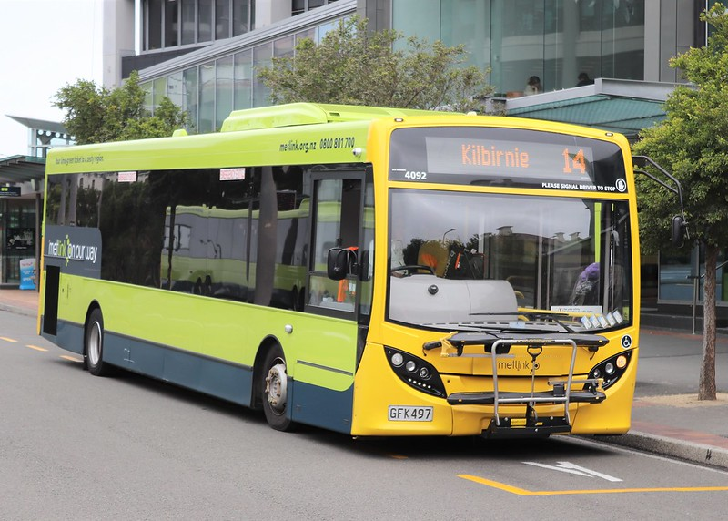

Bus Timetables
Heretaunga College offers a range of transport options to help students get to and from school safely and efficiently. All buses depart from the front of the school on Ward Street, making it easy for students to find their ride. During the first week of school, eligible students are allocated to free buses. These buses leave from designated areas outside the school at the scheduled times. Later in the term, bus passes will be issued to those students.

Students who live more than 4.8 km from the school may be eligible for a Transport Assistance Grant. Application forms are available from the Ministry of Education website. For all other students, public transport services are available. Concession fares can be accessed—just ask your bus driver or check with Metlink. If you have questions about eligibility, bus routes, or fares, feel free to contact the school office or speak directly with the bus driver. You can also take a look at the Heretaunga College Bus Timetable for more details.
Route 911 – Totara Park
- Morning: Departs Totara Park Shops (California Drive) at 8:03 AM, arrives at 8:16 AM
- Afternoon: Departs at 3:27 PM (combined with Upper Hutt College)
Route 930 – Te Marua, Birchville & Timberlea
- Morning: Departs Plateau Road (near #232) at 7:40 AM & 7:45 AM, arrives at 8:20 AM & 8:25 AM
- Afternoon: Departs at 3:10 PM (no Gillespies Rd) & 3:12 PM (via Gillespies Rd)
Route 6068 – Whitemans Valley (via Wallaceville)
- Morning: Departs Wallaceville Rd/Whitemans Valley Rd (church) at 7:15 AM, arrives at 8:15 AM
- Afternoon: Departs at 3:20 PM, arrives by 4:30 PM
Route 113 – Riverstone (Public Bus)
- Morning: Departs Percy Kinsman Crescent (#27) at 7:32 AM & 8:12 AM, arrives at Fergusson Rest Home at 7:45 AM & 8:25 AM
- Afternoon: Departs Fergusson Rest Home at 3:30 PM, arrives Percy Kinsman Cres by 3:43 PM
Route 6069 – Whitemans Valley (via Blue Mountains)
- Morning: Departs Flannagan’s Woolshed at 7:40 AM, arrives at 8:30 AM
- Afternoon: Departs at 3:20 PM
Route 6074 – Maymorn
- Morning: Departs McLaren Street (end) at 7:38 AM, arrives at 8:10 AM
- Afternoon: Departs at 3:20 PM
Route 6075 – Akatarawa
- Morning: Departs Staglands Wildlife Reserve at 7:50 AM, arrives at 8:30 AM
- Afternoon: Departs at 3:20 PM
Route 6081 – Kaitoke
- Morning: Departs 1715 State Highway 2 at 8:00 AM, arrives around 8:20 AM
- Afternoon: Departs around 3:20 PM
Route 110 – Emerald Hill
This is a public Metlink bus that does not depart or arrive at Heretaunga College.
For details, visit Metlink